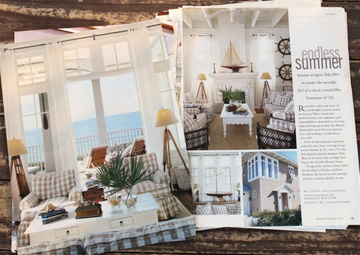

.png)
.PNG)
.PNG)
.PNG)
.PNG)
.PNG)
.JPG)
.JPG)
.PNG)
.PNG)



Happy almost-summer-vacation! You see those pages up there in that photo? Those are from a Coastal Living article I have been saving since March of 2003. (Yes, truly that long.) The article was about a house whose interiors were done for Charlie and Patty Renfroe by Toby West (who also did this house for them that I love.) This one is located in Seaside, Florida. I knew it was on the water, so it was pretty easy to find. Every time we were there, I would always have to wander by and stalk admire it. I also knew from…um…wandering around it, that it was named Total Peace. So I would periodically check to see if it is was on a rental list. No luck. And I checked every rental agency that I could find that handled homes in Seaside. And then, look what popped up on the Seaside real estate site!
Oh yes! I was doing a happy dance to find this one. You see, if I couldn’t rent it to stay in it, I at least wanted to see more photos of it, and the real estate listing had plenty. This is not your typical beach style decor. The 1971 movie, Summer of 42, was Toby’s inspiration for the interior design. It has a nostalgic, nautical feel to it – like you are sailing on a ship (very romantic to me.) He first found a collection of antique ships’ wheels, and they became the starting point for the old beach cottage mood of the house.
Throughout the home he did in Watercolor, he used a seafoam blue-green color palette, but in this one, he uses a taupe and white color scheme and repeats it through the rooms. Of course I love his use of the large scale gingham check in that colorway. (My family room drapes would fit right in, wouldn’t they? 🙂 )
For more nautical feeling, he mixed in fishing poles, pond yachts, and anchors. (Check out those lamps.)
Just like in the house at Watercolor, Total Peace has many wonderful pieces of wicker.
You’ll find painted plank walls in the cottage – just like here in the kitchen.
Now I want you to compare that kitchen here …
with the kitchen he did in the house at Watercolor. Notice anything similar?? They look quite a lot alike to me. Don’t they to you?
There are plank walls, pieces of wicker, and nautical accents here in the small den, too.
The upstairs level has ceilings with vaulted, exposed beams. Downstairs there are 10 ft. ceilings.
Collections of shells are used in many different ways throughout the cottage – from mirror frames to lamp bases and shades.
Even the bathrooms have an old nautical mood to them. seasidefl.com
seasidefl.com
And finally, let’s not forget the best part of a house at the beach…the view….
Wouldn’t you like to be sitting there with that view and enjoying the breeze coming off the ocean??!
There are some great virtual tour videos of Gulf Coast homes made by Moon Creek Studios. They have made a virtual tour for Total Peace, and you can enjoy it here. The Renfroes sold the home to new owners years ago, and it appears to have been sold again…so I am not sure how long the video or the listing will remain on the real estate sites. (In other words, enjoy it while you can.) 🙂 This is definitely one of my favorite homes in Seaside, and I would be overjoyed if the new owners made it available as a rental.
Before I wrap up the post today, I just wanted to thank all of you for your very sweet words of encouragement in my last post. I promise you I read every single comment and email (and some more than once!) I have said it before…you all are such a blessing, and your comments prove it over and over and over again! From your prayers to your words of hope, to your own stories of heartache (Yarlette, I can’t imagine the loss of a child), to scary stories (Martha’s family at the Boston Marathon), to beautiful cheerful yellow flowers sent from a reader, to a gorgeous handmade gift from another reader, to compliments on my age, to making me laugh out loud (Kathy, yes I should paint my son’s toenails! And Jeanne my son on a scooter would send me right over the edge, girl!) You are all just too wonderful for words. June will be here soon. May we all have a fun, but peaceful summer! (Did I tell you daughter is getting four wisdom teeth out in June?! 🙂 )
from a very grateful girl here. 


.PNG)
Glad you enjoyed the home Kelly– I loved working with Charlie and Patty on this house and their others in Seaside and WaterColor over the years. Toby did the interiors on many of their homes, and my team and I have always enjoyed working with him.
Best Wishes,
Tom Christ, AIA
Christ & Associates, Architects and Planners, P.A.
http://pinterest.com/christandassoc/
http://www.christandassociates.com/
———————————————————————-
I so loved this house! I am a huge fan of the work done by your firm. Everything you design is first rate and gorgeous.
Kelly
Just a side note for Karen, “Garden, Home and Party”, I believe the fireplace is constructed of coquina (sedimentary rock made up of shells and remains of sea animals). The walls of the fort in St. Augustine are made of this type of material.
—————————————————————–
Thanks for the info!
Kelly
Gorgeous house, and those views from the back deck are breathtaking. Lover of beige that I am, I just thought all those rooms were calling for pops of bright color, here and there. (And, the ruffles on the sofa pillows, not liking….) Hah, as if I should be turning my nose up at such an abode!
On another note, I’m a veteran of the dentist’s office, had four teeth out with a local anesthetic and the wisdom and another tooth while completely under, never had a problem. Definitely, no solids for a few days and stay away from anything very hot or too cold. (Cool Whip atop Greek yogurt would be a nice treat.)
Hope this new month of June brings more pleasant times for you and your family, and healing for both kids. As always, thanks for writing such an uplifting, fun blog!
Oh-What a wonderful place. I would wish you a beach house just like that! I have been away from blogging (no computer) so I am just now catching up. Those kitchens look remarkably alike to me- xo Diana
I tend to not like beach homes that have too much of a nautical theme, but this one is perfect….love the calm vibe of all the rooms…really lovely!
Hope your daughter’s experience with her wisdom teeth is an easy one. Also hope June is a much better month for all of you. Keep us posted on your son’s recovery.
Kelly, I am so sorry to hear about your “May”. Been at the lake house and was just catching up on my bloggers… Enjoyed your beautiful beach blog and got to the end and said, “what happened!” Then read your Three weeks in May…my heart goes out to your daughter, her friend, your son and your father. Especially to you, because we know who holds everyone together. On a positive note I am so happy you got your new position, my grandson struggles with math and I would love to think someone like you were helping him. Thank you for sharing with us, good luck packing up that classroom!
What an uplifting post! Absolutely beautiful–and I think the sea is calling my name! I loved the table with the sailing ship and the two lamp figurines! I always wonder what titles of books are on the tables and bookshelves– I can imagine that one book HAS to be Anne Morrow Lindberg’s “Gift from the Sea”. This really convinces me to take a trip north to the panhandle! Hope you get to go soon!
Buffalo checks, planked walls, wicker, and the ocean…what more could you want? That’s a beautiful home!
Kelly,
What a charming house. I love the white walls and the buffalo check on so many of the upholstered pieces. What is the finish on the fireplace? I don’t think I like it but couldn’t really see it well enough to determine what they’ve done. I have a few magazines that I treasure that way. If there are a few rooms in them I will save them for years.
Karen
Kelly, I just read your previous post about Three Weeks in May and oh my. Life, the mystery of life, the mystery of God’s plan for our lives. . . things can happen so quickly. So happy your hubby & sons made it out with “just” a broken ankle. Hope the closing out of the school year and changes goes well and you have a wonderful summer!
No wonder you kept that magazine all these years – this is a spectacular beach house! I love the unique shingles on the exterior especially. Now I am going to have to check out more about Toby West. And I’ve been a bit out of commission so I am not sure what you are referring to about everyone’s comments so on my way to browse previous posts. Hope all is well! (In a nutshell, I got a personal aid car ride with my firefighter son taking such awesome care of me.)
http://northislandcottage.blogspot.com/
you had me at Toby West….I love his style!!!
———————————————————————
Me too! I have loved his work for YEARS!
Kelly
Kelly,
I have to agree that this Seaside home is lovely! You and your family deserve a vacation there soon! Here’s to hoping it comes up as a rental.
———————————————————————-
A vacation there right now would be soooo wonderful! I am taking a lunch break at the moment from moving all my classroom things to my new room today. Glory at the dust and spider webs!!! EEK! A beach trip is definitely needed. 🙂
Kelly
Kelly
This place is wonderful! Love the exterior shingles and color…and love the fact that the outside pallette is carried in!
——————————————————————-
So glad you liked it! It is a very different palette from what is typical of Seaside (a lot warmer to me.) And by the way, I enjoyed your post on Lauren Liess today – especially that dining room with its wonderful collection of prints over the buffet! I would LOVE to design textiles like she does. What a fun job!
Kelly
Advice: 20 years ago, I had all 4 of my wisdom teeth out at the same time and was never in one ounce of pain during (cause I was put under) or after. Last year, my 20 year old daughter had all four of hers out at the same time and here is what I learned:
No matter what the Doctor says: DO NOT eat anything solid for several days, until the wounds are healed over. The Surgeon said 24 hours, and that did not feel or sound right to me, but we went with the experts instructions, and food particles were settled in there, then wounds healed over the food particles and caused Beth scary problems that could have easily been avoided by holding off on solid food. We could have been spared about 4 days of high anxiety that was totally avoidable. Also, upon arriving for the surgery I learned that the surgeon was also the Anesthesiologist. That made me really uncomfortable (how could you do both those jobs at the same time?)I should have gone with my instincts right then. Next time, I will find out about that ahead of time, only use someone that my friends have used and been happy with, and hold off on the solids. Good luck…it does not have to be a bad experience. It can be a great and enjoyable free pass to eat lots of ice cream and other delicious smooth stuff. 🙂
————————————————————————
THANK YOU so much for all the wisdom teeth advice! We will definitely stick with the ice cream and pudding foods. I had no problem at all when I had mine out decades ago – and even went to a picnic the following day. My son was a whole different story, and he was very difficult to wake after. I hope my daughter is more like me and less like my son with this.
Kelly
Oh, I am so at this house! I recently went on a sisters trip to Amelia Island, and since then I have been a bit obsessed with beach décor, and this house fits my obsession completely. I love all the plank walls painted white, actually I loved everything. I guess if the kitchen works in one house why not do it in both houses. Let us know if they will be renting this house! Love It!
———————————————————————–
You know I will be keeping my eye out for rental info on it! Isn’t it a beautiful place? And oh yes, beach trips will certainly make you obsess on recreating that style at home. I totally get that!
Kelly
I hope you own that beach house someday. It has your name written all over it. Just yesterday I was wondering what I could do with one of those old gym baskets pictured in one of the bathroom photos. My friend reminded me that things in open baskets like that can look messy. Well, those white towels look pretty neat in the one pictured. Now, I am on a mission to find one for my bathroom. Good luck to your daughter in getting those wisdom teeth out. I am glad she isn’t getting them out in May. Be ready to make a video when she comes out of anesthesia…you could put it on youtube and maybe make enough money to buy that beach cottage with your name on it.
———————————————————————–
Good luck to you on finding the baskets. I think I found a similar one at TJMaxx awhile back. Great idea on the video! Between all the money I am sure to make on it plus all the lottery winnings I will get, perhaps I can purchase the house then. Ha ha! And then of course, I will invite all of you to come stay for a vacation there.
Kelly
I am in love……………..
—————————————————————-
I am too! You don’t find many like these.
Kelly